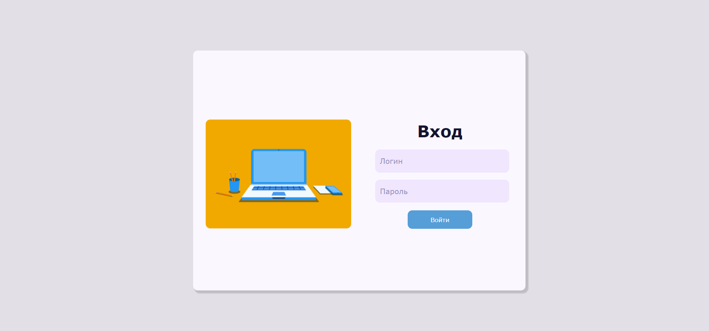
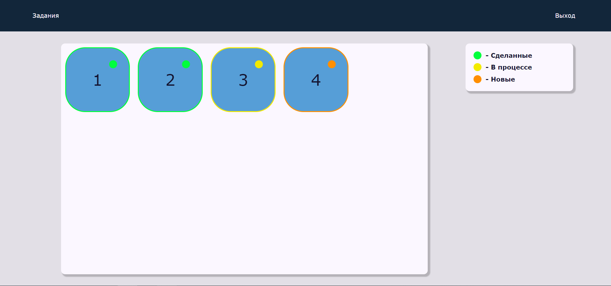

В выпускной работе спроектирована и реализована система, предназначенная для изучения базовых конструкций языков программирования. Система представляет собой web-приложение и работает в двух режимах: в режиме создания заданий и в режиме обучения. Система позволяет администратору создавать, удалять, изменять и настраивать уровни игры. В режиме обучения пользователь в игровой форме может выполнять последовательные тестовые задания, переходя с уровня на уровень.
Данная программная система поддерживает три роли пользователей: ученик, учитель, администратор. При запуске программной системы открывается страница авторизации, представленная на рисунке. Необходимо ввести логин и пароль в соответствующие поля, после чего пользователь может нажать кнопку или "Войти" для входа в системе.
Ученик выбирает уровень для решения. Уже решенные уровни обозначаются зеленым, начатые - желтые, новые уровни - оранжевым
Задание появляется при заходе на уровен, и при необходимости на нажатию на кнопку "i" Программа формироется перетаскиванием команд из левой чати экрана, запуск производиться по кнопке, сохранение и отправка задания учителю, также по кнопке После выполнения в поле исполнителя появлсяет надпись о результате работы